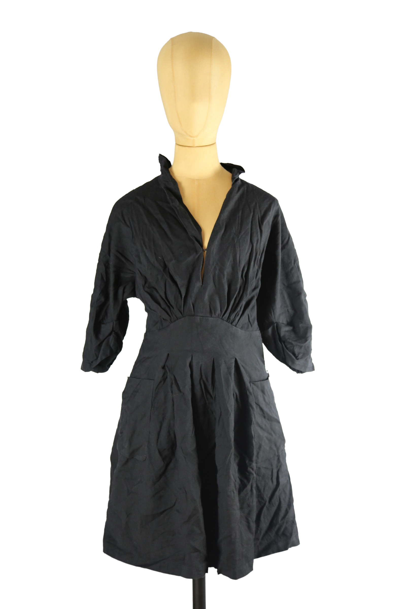

Isabel Marant
65.00 €
Aus dem kuratierten Archiv von Disorder119. Schwarz gehaltenes Kleid von Isabel Marant mit klarer, femininer Linienführung und dezenter struktureller Tiefe. Der weich fallende Stoff ist bewusst leicht geknittert und verleiht dem Piece eine lässige, organische Anmutung, wie sie für die frühe Isabel-Marant-Ästhetik typisch ist. Der tiefe V-Ausschnitt öffnet die Silhouette, während die hohe Taillennaht den Oberkörper definiert und in einen locker fallenden Rock übergeht. Dreiviertelärmel mit sanfter Weite sorgen für Bewegung und Balance zwischen Alltagstauglichkeit und subtiler Eleganz. Ein verdeckter Reißverschluss ermöglicht einen sauberen, reduzierten Abschluss. Das Kleid lässt sich sowohl pur als auch gestylt tragen und wirkt zeitlos, ruhig und souverän. Details: Marke: Isabel Marant Farbe: Schwarz Größe: 0 Passform: Tailliert mit locker fallendem Rock Verschluss: Reißverschluss Mater
Im Archiv ansehen & in den Warenkorb →